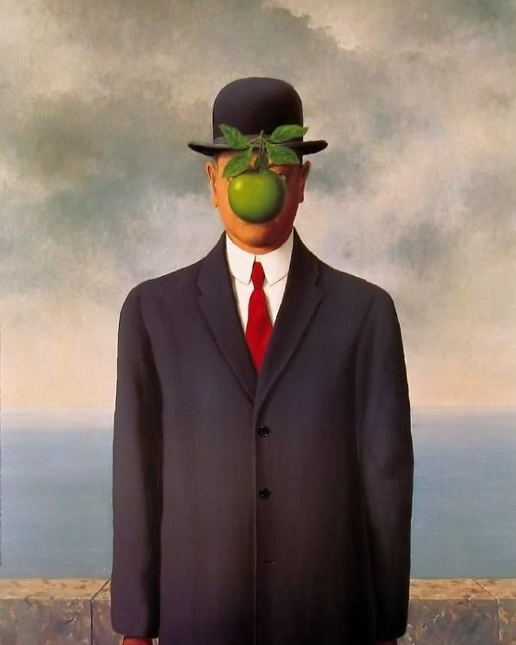

Poco se conoce acerca de los primeros años de Magritte. Nació en Lessines, provincia de Hainaut, en 1898, el mayor de los hijos de Léopold Magritte, sastre y comerciante de telas, y Regina (nacida Bertinchamps). Comenzó sus lecciones de dibujo en 1910. El 12 de marzo de 1912, su madre se suicidó ahogándose en el río Sambre. Este no fue su primer intento, pues llevaba años intentando quitarse la vida, obligando a su marido Léopold a encerrarla en su dormitorio. Un día ella escapó y estuvo perdida por días. Más tarde fue descubierta, muerta, río abajo. De acuerdo a la leyenda, Magritte, quien entonces tenía 13 años, estaba presente cuando el cuerpo fue recuperado del agua, pero recientes investigaciones han desacreditado tal historia. La imagen de su madre flotando, con su vestido cubriendo su cara, puede haber influenciado una serie de pinturas de 1927 a 1928, incluyendo una de sus obras más conocidas, Les Amants, pero el propio Magritte desechaba dicha interpretación del cuadro.
Los amantes es una pintura surrealista de René Magritte realizada en París, en el año 1928. Es la primera obra de una serie de cuatro variaciones. En ella, se representa en primer plano el beso de una pareja con los rostros cubiertos por unas telas que ocultan sus identidades.
El Hijo del Hombre es una pintura de 1964 hecha por el pintor surrealista de nacionalidad belga René Magritte, y su obra más conocida.Magritte lo pintó como un autorretrato. La pintura se compone de un hombre con abrigo, corbata roja y bombín de pie delante de un muro. Más allá se ve el mar y un cielo nublado.
Golconda es un óleo sobre lienzo del artista surrealista belga René Magritte, pintado en el año 1953. Suele estar expuesto en la colección privada del mecenas y empresario estadounidense John de Menil, en Houston.
The False Mirror es una pintura al óleo surrealista de René Magritte que representa un ojo humano enmarcando un cielo nublado y azul. En la representación del ojo en la pintura, las nubes ocupan el lugar que normalmente ocupa el iris. El título original francés de la pintura es Le faux miroir.
La piedra es ligera dentro de su condición pesada… es otra de las clásicas contradicciones que tanto le gustaban al surrealista belga, siempre dándole vueltas a imágenes y conceptos imposibles, sintuándonos en un lugar entre lo real y lo irreal.